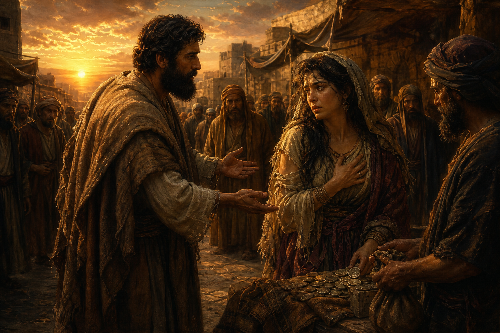

Old Testament · Book 28 of 39
Hosea
A prophet is told to marry an unfaithful woman so his own marriage can show Israel exactly what it looks like to break covenant with a God who keeps loving anyway.
God tells Hosea to marry a woman who will be unfaithful to him, turning Hosea's own painful marriage into a living illustration of Israel's unfaithfulness and God's refusal to stop pursuing his people.
How shall I give thee up, Ephraim? how shall I deliver thee, Israel? ... mine heart is turned within me, my repentings are kindled together.
What happens in Hosea
Hosea marries Gomer at God's command, and their children are given symbolic names announcing coming judgment on the northern kingdom of Israel for its idolatry and political alliances built on broken trust rather than reliance on God. Gomer eventually leaves Hosea for other lovers, mirroring Israel's pursuit of other gods, yet Hosea is told to buy her back out of her situation and love her again, a costly, humiliating act that embodies exactly what God is doing for an unfaithful nation. The middle chapters alternate between scathing indictments of Israel's corrupt priests, kings, and idol worship, and sudden outbursts of divine anguish in which God's threatened judgment keeps giving way to overwhelming tenderness, as when he recalls teaching Ephraim to walk as a child. The book ends with a direct call to repentance and a promise that if Israel returns, God will heal their waywardness and love them freely, with his anger turned away.
Why it matters
Hosea personalizes covenant unfaithfulness in the most vulnerable way possible, making abstract theological betrayal feel like exactly what it is: a marriage being broken. It reveals a God whose anger at sin never outlasts his commitment to win back the one he loves, offering one of the Old Testament's most emotionally raw pictures of grace.
Jump to a chapter
Hosea has 14 chapters — select one to begin reading there.